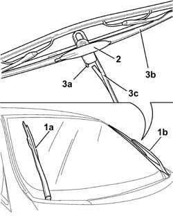

5050B28 WINDSCREEN WIPER BLADE/S - R+R
- Path
- Procedures > 50 AUXILIARY UNITS > 5050 SCREEN WASHERS AND HEADLAMP WASH/WIPE > 5050B WINDSCREEN WASH/WIPE > 5050B28 WINDSCREEN WIPER BLADE/S - R+R
- Kind
- repair procedure (removal / refitting; the operation number is the code)
- Applies to
- all engines; all production periods
- Interactive page
- https://sloeber94.github.io/elrnDB-fUlss/en/#/179007502
Applies to: all engines; all production periods
 Removing
Removing
 Refitting
Refitting1. With the ignition key in the OFF position or extracted, operate the right lever downwards; the windscreen wipers (1a) and (1b) should assume a vertical position and stop in this position.
2. Remove the jet body which is a press fit on the blade.
- Lift up the windscreen wiper arm and position the blade so that it forms a 90° angle with the actual arm.
3. Press the attachment device tab (3a) and, at the same time, push the blade (3b) downwards to release the arm (3c) from the actual blade.
- proceed in the same way for the removal of the remaining windscreen wiper blade.

Applies to: all engines; all production periods
Refitting
Removing- Lift up the windscreen wiper arm.
- Fit the new blade, inserting it on the arm and pushing upwards until the tab clicks into place.
- Make sure that the blade is properly attached.
- Position the jet body on the blade and check that it is properly secured.
- Rest the winscreen wiper arm complete with blade gently on the windscreen.